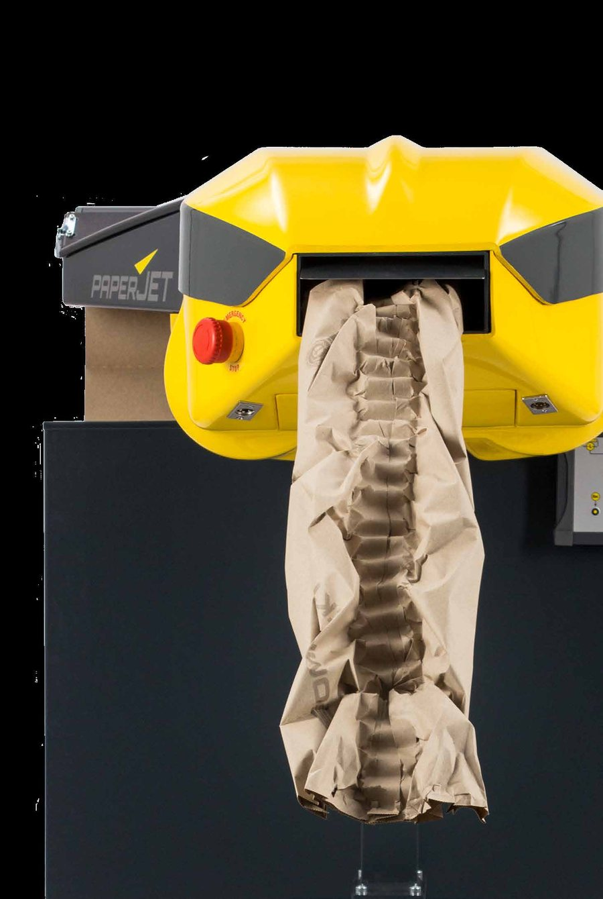
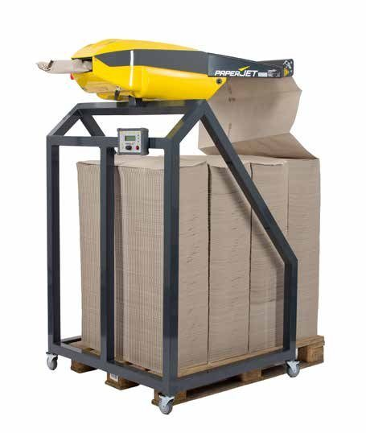
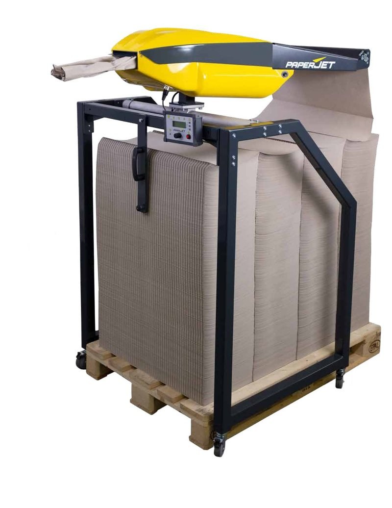
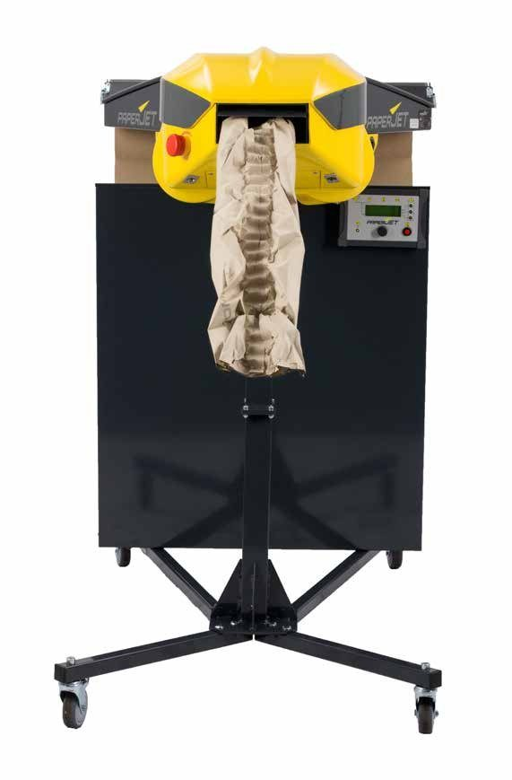
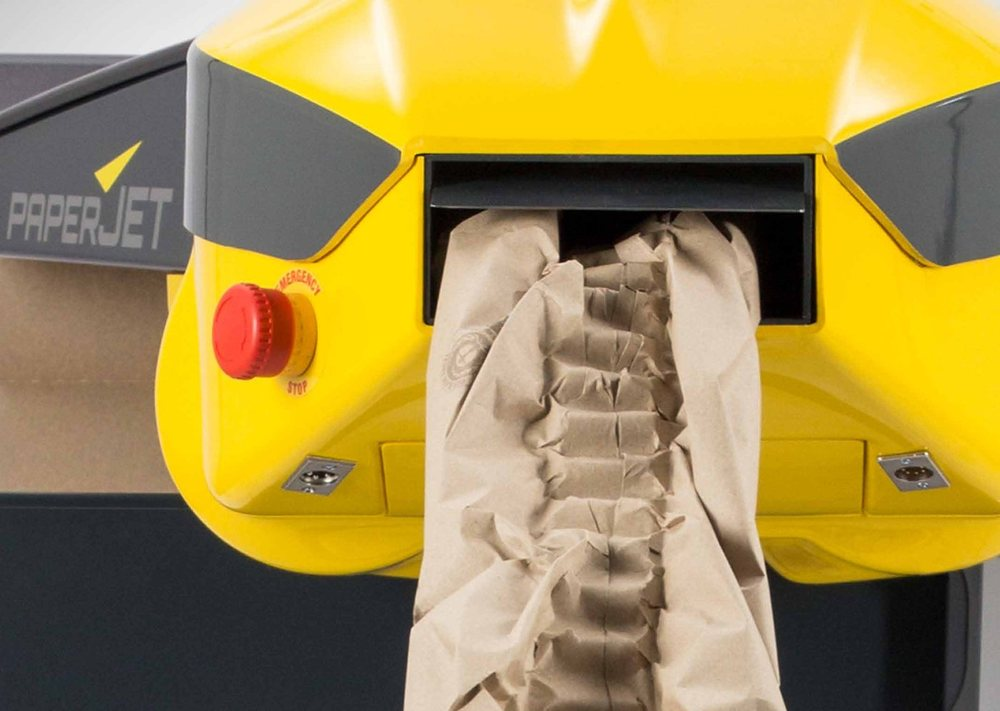

Running the PaperJet
From switching on to cleaning down. Loading paper, the hand control panel and its five modes, and keeping the machine running.
Supplied by Cotswold Packaging Group
Based on the Sprick PaperJet operating manual, version 3.4

What the PaperJet does
It turns flat recycled paper into cushioning pads, cut to the length you set, on demand at the packing bench.
- Speed
- Up to 1.2 metres a second, up to 200 pads a minute. Quieter than 70 dB.
- Lengths
- 30 cm to 1015 cm, set to the centimetre.
- Paper
- PaperJet paper only: 100% recycled, 70, 90 or 120 g/m². Rolls, ComPackt stacks (24 kg, about 390 m) or a continuous ComPackt pallet (7,600 m).
- Power
- Normal mains, 110 to 240 V. Rated 1450 W.
- Size
- About 1110 × 755 × 280 mm, about 55 kg on its own.
In the box
- PaperJet machine and power supply
- Hand control panel and its support rod
- Foot switch
- Special tool for the knife shaft (the spanner)
- Cable ties and operating manual
- Stand: ComPackt, EuPal or middle stand
The machine stays the property of Sprick and is supplied on loan.
Stands: how it sits at the bench

ComPackt frame
Sits over a ComPackt pallet. Outlet at 1,100 mm.

EU-Pal frame
Over a Euro pallet, outlet at 1,500 mm.

Middle stand
On castors, height adjustable. Takes paper rolls.
What's where on the machine

Emergency stop and paper outlet. Sprick photo.
- Service panels, underneath. Open for cleaning only.
- Hand control panel socket
- Foot switch socket
- Paper outlet, where the pads come out
- Emergency stop, the red mushroom button
- Service hood, covers the cutting area
- Paper guide cover, opens to thread paper
- Deflector rollers, the paper runs between them
- On/off switch and power socket
- Dancer arm, keeps the roll under light tension
- Roll lock with locking knob
- Roll seat, where the paper roll sits
Safety first
- Only trained operators use the machine.
- Switch off before you put a hand inside it, for any reason.
- Close-fitting clothes, long hair tied back, no gloves when loading paper. The rollers can pull things in.
- Never run it with the service panels open. A marking inside shows from a distance if they are.
- Do not move the machine while it is plugged in.
Emergency stop. Place the machine so the red button is always in reach. Press it to stop everything. Never use it to clear a fault message.
Pacemakers. The hand control panel has magnets. Anyone with a pacemaker or defibrillator keeps at least 26 cm away from it.
Heavy paper: one person up to 15 kg. A 27 kg roll or a 24 kg ComPackt stack needs two people.
Set up and switch on
- Position the machine so the emergency stop, hand control panel and foot switch are all easy to reach.
- Plug the foot switch into its socket on the machine.
- Plug the hand control panel into its socket.
- Connect the power lead to the machine, then to the wall.
- Pull the emergency stop out if it is pressed in.
- Flip the on/off rocker switch to on. The display lights up.
Cables
- No extension lead longer than 10 m, and no multi-way blocks.
- Run cables out of walkways so nobody trips, and tie them up with the cable ties supplied.
If paper is not loaded yet, load it before you start producing pads. The next slides show how.
Load a paper roll 1: fit the roll
Switch off first. No gloves, sleeves tight. Two people for a 27 kg roll.
- Push the roll into the roll seat.
- Pull the locking knob and swing the roll lock round in front of the roll. Check the knob clicks back in.
- Open the quick-release catches on both sides of the paper guide cover.
- Lift the paper guide cover. Check its support pin catches so it stays open.
Why the roll lock matters
If the roll is not locked it can slide sideways, and the paper web keeps tearing. It is the first thing to check if pads keep breaking.
Load a paper roll 2: thread the paper
- Push the dancer arm in the direction of the arrow to release the roll brake.
- Feed the paper under the dancer arm and leave a loose loop, so it is not under tension.
- Feed it between the deflector rollers.
- Wrap it round the paper guide so it forms a triangle.
- Push it in until the gear wheel grips it.
- Lift the cover slightly and pull the support pin back into its joint.
- Close the paper guide cover and both catches.
- Switch on and hold manual feed until a closed pad appears at the outlet.
Manual feed runs slowly and stops the moment you let go. It is only for loading.
Load ComPackt fanfold paper
- Switch off. Put the ComPackt stack on its shelf. Two people for a 24 kg stack.
- Cut the bands on the stack and remove them.
- Open both quick-release catches and lift the paper guide cover until the support pin catches.
- Feed the paper between the deflector rollers.
- Wrap it round the paper guide into a triangle and push it in until the gear wheel grips.
- Release the support pin, close the cover and catches.
- Switch on and hold manual feed until a closed pad appears.
Join the next stack, no rethreading
On stands that take two stacks, you can glue them together so paper runs straight on. Or use a continuous ComPackt pallet: 7,600 m with no joins.
- Run strips from the ATG glue dispenser across the top of the stack in use.
- Put the new stack on top of the glue strips.
- Cut and remove the bands on the new stack.
Changing an empty roll
- Switch off.
- Pull the locking knob and swing the roll lock out of the way.
- Push the dancer arm to release the roll brake.
- Take out the empty core.
- Push the new roll into the roll seat and lock it. Check the knob clicks in.
Then thread the paper exactly as for a first load:
Catches open, cover up, under the dancer arm with a loose loop, between the deflector rollers, triangle round the paper guide, into the gear wheel, cover closed, manual feed until a closed pad appears.
Roll joins are not covered in the manual. Thread a new roll from scratch each time.
The hand control panel
Drawing above, the real panel below (Sprick photo).
- 1 to 5
- Mode lights along the top: Length, Removal, Manual, Series, Preset. The lit one is the mode you are in. Keys 1, 2, 3 down the right are the preset keys.
- 6 Display
- Shows the mode and its settings. Shows Service when maintenance is due.
- 7 Esc
- Cancels what you are doing, in any mode. Ends Removal and Series mode.
- 8 Knob
- Turn and push to choose the mode and change values.
- 9 Hand button
- The red button. Starts production in the chosen mode. The foot switch does exactly the same.
Using the knob
- Choose the mode with the knob. The yellow light shows which one is on.
- Push the knob. The value you can change starts to blink.
- Turn it to change the value. Slowly for ones, faster for tens, fast for hundreds.
- Push again to confirm. The next value starts to blink.
- When the last value is confirmed, the machine is ready.
Shortcut: made a pad in Manual mode that is just the right length? Hold the knob for 1 second to copy that length into Length or Removal mode.
Mode 1: Length
One pad, the same length every time you press. The everyday mode.
- Choose Length mode.
- Set the length with the knob: 30 to 1015 cm.
- Press the hand button or the foot switch. One pad comes out, cut.
Good for a regular box size: set it once, then just tap the foot switch for each carton.
Mode 2: Removal
Hands-free. As soon as you take a pad, the next one is made and waiting.
- Choose Removal mode and set the length.
- Press the hand button or foot switch once to start. The mode light blinks while it is active.
- Take pads as you need them.
- Press Esc before you take the last pad, to stop.
Need one odd length? Hold the hand button or foot switch. You get a pad as long as you hold, then Removal mode carries on.
Mode 3: Manual
Paper runs for as long as you hold. Let go and it cuts.
- Choose Manual mode.
- Press and hold the hand button or foot switch.
- Let go when the pad is long enough. It is cut off.
- Like that length? Hold the knob for 1 second to save it for Length or Removal mode.
Best for odd-sized boxes, and for finding the right length for a new product.
Mode 4: Series
A set of pads with one press: up to three different lengths, each with its own count.
- Choose Series mode.
- With the knob, set a length and how many pads, for up to three steps.
- Start it. The series runs from the top step down.
- Esc ends the series.
Example: 2 × 60 cm for the base, then 1 × 120 cm to fill over the top. Every carton of that product gets the same protection.
Mode 5: Preset keys 1 to 3
Three favourite settings, one key each.
- Choose Preset key mode.
- Store a length and count against keys 1, 2 and 3.
- Press key 1, 2 or 3 on the right of the panel to get that pad or set of pads. Repeat as often as you like.
You can still make a one-off length at any time by holding the hand button or foot switch.
Ideal for a bench that packs three regular box sizes: small, medium, large.
Every shift
Before you start, check
- Plugs are pushed fully home.
- Service hood and paper guide cover stop the machine when opened.
- The emergency stop works.
- No dirt, paper build-up or torn paper in the machine.
- No loose screws on the service panels.
Then run
- Paper loaded? If not, load a roll or a ComPackt stack.
- Switch on.
- Choose a mode and press the foot switch or hand button.
End of shift: switch off at the rocker switch.
Opening the machine
Unplug before you open anything beyond the paper guide cover, and keep the plug where nobody can put it back in.
- Paper guide cover
- Quick-release catches each side. Lifts up, held by a support pin. Used for every paper load.
- Service hood
- Covers the cutting area. Opened to clear a paper jam.
- Embossing shaft cover
- Inside the service hood, held by two hand screws.
- Service panels
- Underneath the machine. Opened for cleaning out paper scraps.
The special tool
The spanner supplied with the machine fits the knife shaft. You turn the shaft with it to free paper caught in the cutter. Keep it with the machine.
Clearing a paper jam
- Switch off and unplug.
- Open the service hood.
- Undo both hand screws and tip them to the side, towards the pivot shaft.
- Open the embossing shaft cover and pull out the paper.
- Turn the knife shaft with the special tool until every scrap is out.
- Close the embossing shaft cover and the service hood.
- Plug in and switch on.
- If the display asks you to remove paper, check it is clear and push the knob.
- Confirm paper removed with the knob. The knife returns to its start position by itself.
Cleaning
Take out paper dust and scraps at least once a week. Build-up is a fire risk.
- Switch off, unplug, and keep the plug out of reach.
- Open the service panels underneath.
- Blow or wipe out the paper dust and scraps.
- Close the panels before you run the machine again.
- Check the cables for loose connections, rubbing or damage.
Use
- Compressed air
- Lint-free cloths
- Isopropanol (IPA) for marks
Never
- Harsh or abrasive cleaners
- Lots of water. Cover openings first if you clean wet.
Faults and fixes
| What you see | Likely cause | Fix |
|---|---|---|
| Display dark | No power, emergency stop pressed, hood open, or overheated | Plug in, pull out the emergency stop, switch on, close the hood. If overheated, off for 5 to 10 minutes. |
| Won't start, mode light flashes | Paper chute flap open | Check the paper chute and close the flap. |
| Paper keeps tearing | Roll not locked, or dirty roll brake | Lock the roll. Take it out and blow the brake clean so the dancer arm moves freely. |
| Switches off mid-run | Electronics too hot | Off for 10 minutes and clean the machine thoroughly. |
| Pads come out open | Star screws on the rotary shaft loose | Check the star screws are tight. |
| Message: paper build-up | Paper piling up inside or torn off | Clear the build-up and the paper. |
| Message: remove paper | Knife not at its start position | Clear the cutting area, then confirm with the knob. |
| Message: power fault | Mains voltage dipped | Switch off for 10 seconds, then back on. |
If overheating or a fault keeps coming back, call us. Do not open the electrics.
Who does what
Your operators
- Loading and changing paper
- Clearing paper jams and torn paper
- Weekly clean-out of paper scraps
- Swapping the plug lead or foot switch
- Pre-shift checks
Sprick-trained service
- Service when the display shows Service: about every 500 rolls or 300 ComPackt stacks
- The six-monthly check of the knife shaft guard
- Spare parts and anything electrical or on the drives
Questions or a service visit: Jo Lavene, Cotswold Packaging Group, 07930 404517